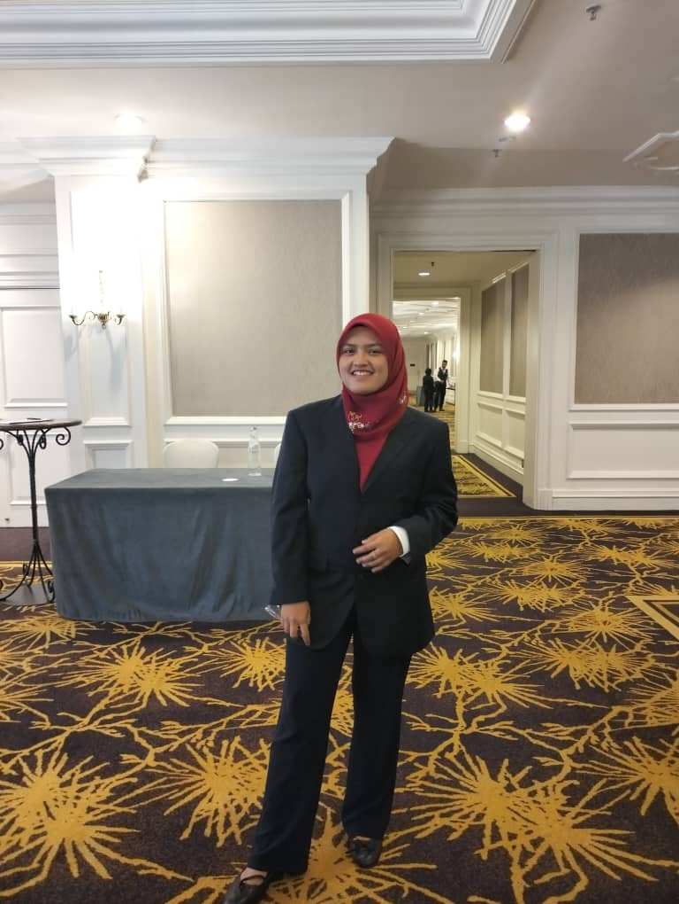

Hi, I'm a 26-year-old IT professional born on October 14th, 1999. I hold a Bachelor's degree in IT (Mobile Computing) and bring over 6 years of dedicated experience in the IT field. Currently single and focused on advancing my career in technology, I'm passionate about leveraging my expertise in software development and IT solutions to create innovative and impactful applications. With a strong foundation in both academic knowledge and practical experience, I'm committed to continuous learning and professional growth in the ever-evolving tech industry.